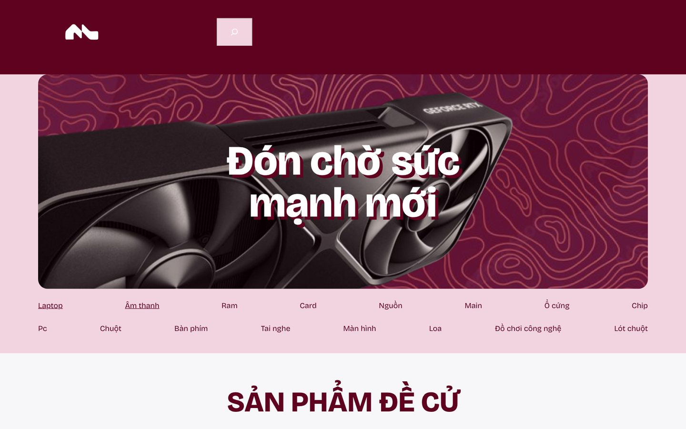
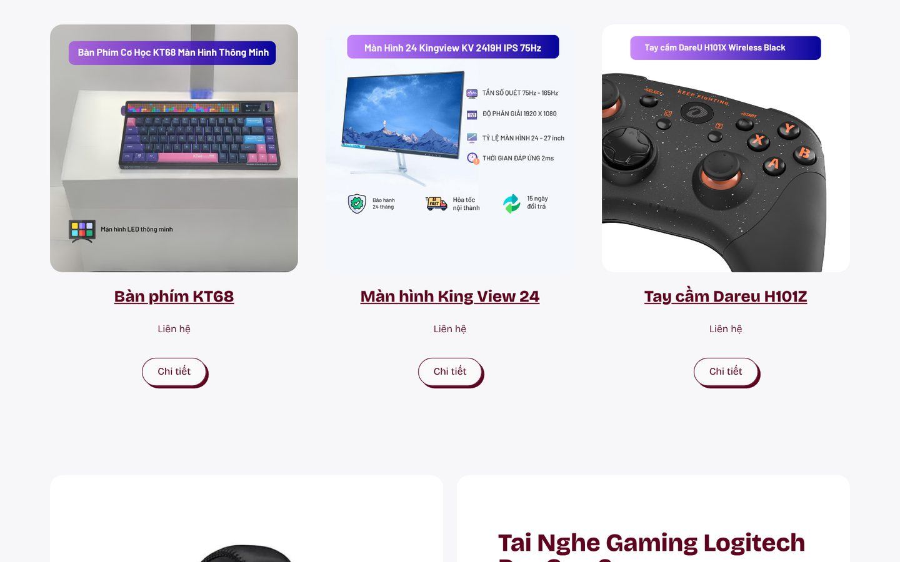
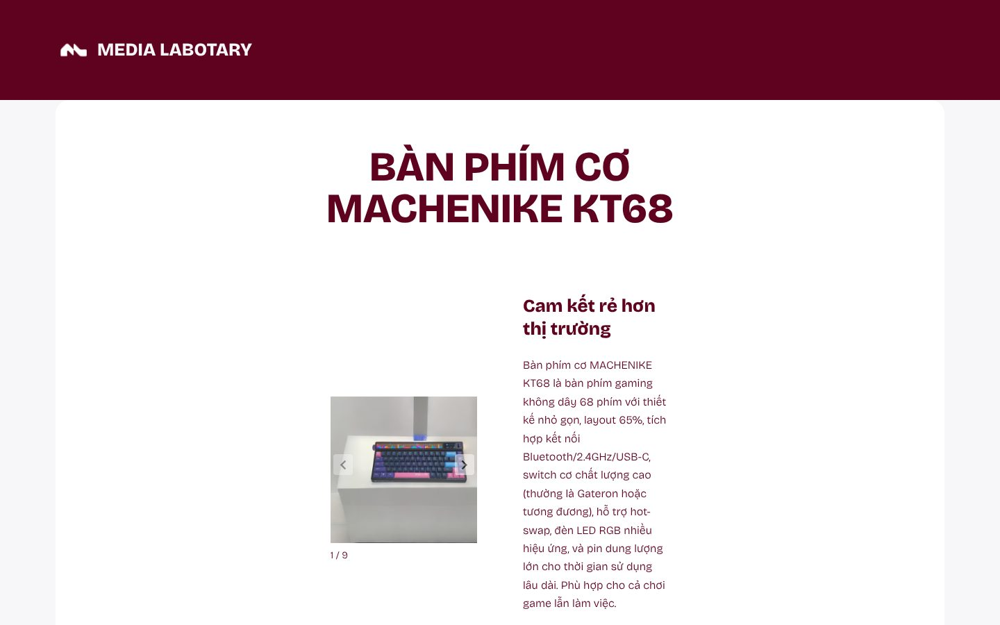
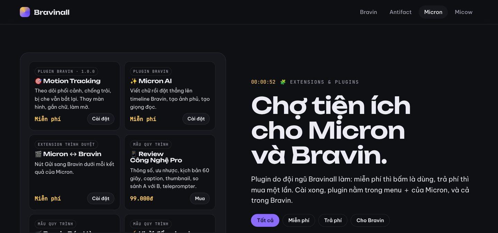

Phạm Việt Hà
Phạm Việt Hà
Mục lục
Trong hành trình của Phạm Việt Hà, Medialabotary là chặng làm Digital Marketing: triển khai nội dung số, chạy chiến dịch online, và xây kênh TikTok Media Lab (@medialabotary) chuyên review công nghệ.

Media Lab review gì?
Kênh tập trung vào thiết bị cho người chơi game và người làm việc với máy tính:
- Bàn phím cơ: Machenike KT68, KT68 Pro, KT68 Smartscreen, Razer BlackWidow V3 Pro Wireless.
- Chuột: chuột không dây Razer.
- PC gaming: dàn máy ROG.
Kênh có gắn TikTok Shop. Lời giới thiệu: "Media lab chúng tôi hiện đang nỗ lực xây dựng doanh nghiệp".
Những video nổi bật
| Video | Lượt xem |
|---|---|
| Machenike KT68 Pro | 15,3 nghìn |
| Machenike KT68 | 13,2 nghìn |
| Razer, chuột không dây | 9.616 |
| Machenike KT68 Smartscreen | 5.605 |

Số liệu kênh (tháng 10/2026)
- 33 video, 5.640 lượt thích, 127 người theo dõi.
- Hơn 44 nghìn lượt xem từ 6 video ghim và mới nhất.
- 3 trên 6 video đó vượt 9 nghìn lượt xem.
Website Media Labotary: bách hoá điện tử
Ngoài kênh TikTok, Media Labotary còn có website bán thiết bị công nghệ tại medialabotary.wordpress.com, dựng trên WordPress với khẩu hiệu "Bách hoá điện tử".

Website gồm:
- Danh mục sản phẩm: laptop, âm thanh, RAM, card đồ hoạ, nguồn, mainboard, ổ cứng, chip, PC, chuột, bàn phím, tai nghe, màn hình, loa, đồ chơi công nghệ, lót chuột.
- Sản phẩm đề cử: bàn phím Machenike KT68, màn hình Kingview 24 inch, tay cầm Dareu H101Z, tai nghe Logitech Pro Gen 2.
- Đồ chơi công nghệ: loa Bluetooth, máy chạy đĩa than, robot thú cưng Vector 2, đèn không trọng lực.
- Âm thanh và camera: loa, micro không dây, webcam, kèm đánh giá sao cho từng sản phẩm.
- Thương hiệu: AULA, Machenike, Sanhuo.

Mỗi trang sản phẩm có bảng thông số kỹ thuật và hướng dẫn sử dụng. Ví dụ trang bàn phím Machenike KT68 ghi rõ số phím, kiểu kết nối, loại switch, dung lượng pin và cách chuyển chế độ kết nối. Đây cũng là sản phẩm có video review nhiều lượt xem nhất trên kênh TikTok.

Website Media LabotaryBách hoá điện tử: thiết bị công nghệ, âm thanh, đồ chơi công nghệ
Từ kênh review đến công cụ
Review công nghệ trên TikTok cần nhiều thứ: giới thiệu thông số trong vài giây, nêu ưu nhược rõ ràng, kịch bản ngắn, thumbnail bắt mắt. Đó cũng chính là những việc plugin Review Công Nghệ Pro trong chợ của Micron làm giúp bạn: soạn thông số, ưu nhược, kịch bản 60 giây, caption, thumbnail, so sánh A với B và teleprompter.

 TikTok @medialabotaryKênh review công nghệ Media Lab
TikTok @medialabotaryKênh review công nghệ Media Lab
 Đọc thêmBa kênh TikTok của Phạm Việt Hà: @havvking, @havv_king và @medialabotary
Đọc thêmBa kênh TikTok của Phạm Việt Hà: @havvking, @havv_king và @medialabotary